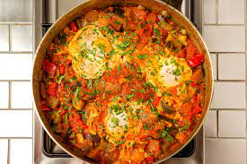

Pisto

A classic spanish dish, Pisto is kind of like ratatoullie. It is a mix of veggies and cheese. You can also add a fried egg on top to make the dish more filling. I personally would recommend it!
I have never had pisto in Spain but I certainly like the dish. It is a good family meal and is also a healthy dish that bring some flavor. I would also recommend adding some cheese on top to make it even tastier!
- green bell pepper
- red bell pepper
- yellow bell pepper
- eggplant
- manchego cheese
- eggs
- can of diced tomatos
- onions
- Dice all vegetables
- place the veggies in a large cast iron pan on medium heat. Add olive oil so the veggies are able to cook
- cook for 30-45 minutes and then place the tomatos in the pan
- add cheese on top of the dish and wait until the cheese has melted before cooling dish and serving. If you want to add an egg do so when you are adding the cheese.
- Enjoy!